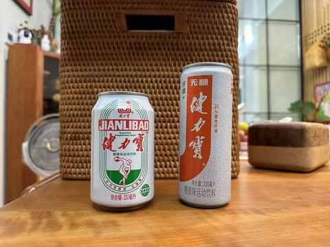
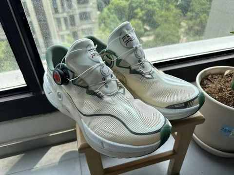

关于 8 岁时喝健力宝中奖的记忆
一、小卖部
小时候家里在镇上开小卖部，乍一听是多么令人羡慕，这往往意味着想吃什么就吃，想喝什么就喝，零食无限量供应。
但其实呢，作为一家生意不太好的小卖部，如果我想吃什么想喝什么也都是要和爸妈说，大部分时候是不会同意，因为这些零食饮料之类的都是要卖钱的。
稍微年龄大一点，遇到假期需要在店里面看店，主要是中午替换爸妈回家吃饭，每次 1-2 个小时不等。
看店的时候虽然不能吃喝店里面的东西，但是可以观察各式各样的商品，当时健力宝和哇哈哈就已经是每家小卖部都会有的单品。
二、喝健力宝中奖
应该是暑假的某一天，天气比较热，这种时候最想喝的是健力宝，虽然当时店里面没有冰箱，即使是夏天饮料都是常温，但健力宝依然是小孩子们超级想喝的饮料。
当天估计是帮家里干了点活，就问能不能喝瓶健力宝，居然就同意了，拿一瓶罐装的，没想到拉开拉环还有惊喜等着我。
大概就是下面这张图的样子（在网上找的图），拉下来的拉环背面有印获奖的等级，罐子内部有红色文字。

如果大家有看过《疯狂的石头》应该对其中一个喝可乐中奖的情节有印象，当时关于这种骗局的宣传在报纸和电视上都能看到。
当时中奖的第一反应也想着会不会是骗子，后面打了热线电话之后，确认是真的中奖，奖品是一件价值 50 元的李宁 T 恤。
三、去市里领奖
当时县城里面是没几家专卖店的，更没有李宁的专卖店，查询之后发现最近的专卖店是在市里面。
市里面也不是说去就去的，且不说要坐大巴车，如果只是领一件价值 50 块钱的 T 恤就跑一趟，那就是亏的，来回的路费都接近 50 块。
要等待一个要去市里进货的时机，小时候即使是去市里的医院看病也会顺带着进货，要么就是进货之后顺带着看病，必须把几件事攒在一起这个路费才花的更有性价比。
当时去领奖的记忆已经模糊，印象中是和爸爸一起去的，下大巴之后就第一时间去到李宁专卖店，爸爸和售货员说明来意，然后给到了中奖的易拉罐，店员检查好之后，指了指旁边的一排 T 恤，说可以从里面选一件。
最终选了一件酒红色的 T 恤，后面拿回家妈妈洗的时候就说牌子货就是料子好。
料子好不好不知道，但是质量是真的顶，这件 T 恤至少穿了有 10 年以上，到高中的时候都还在穿，我也穿去学校过。
四、现在
健力宝已经不是大部分时候会首选的饮料，不过最近 618 还是在抖音的直播间买了一箱经典复刻的罐装，之前买过新出的无糖系列。

味道上和小时候一样又不一样，很难形容，或许是人长大了，环境也不一样的原因。
近几年也是通过长篇一些报道和书籍才知道健力宝和李宁的渊源，健力宝的故事令人唏嘘，李宁的发展也是几经波折，特别是会被很多人拿来做反面典型的：90 后李宁的宣传策略。
李宁的产品在开始实习之后基本上每年都会买一些：T 恤、鞋子、袜子等等，最近买的是一双跑步鞋。

在当下，对这两个创立时间加起来超过 70 年的且在童年和青少年时期都印象深刻的品牌，自然是有好感，但更多的时候还是会保持理性，即便想支持也是按需要来比较克制的去购买需要的产品。
虽然现在已经是咖啡喝的多，运动品牌也是安踏买的多，依然真心希望健力宝和李宁都能做成传承百年的品牌。